영국의 보물 상자, Wardian case 이야기
게시: 2020-02-13T06:30:26+09:00
인간이 먹어야 사는 동물의 몸에서 벗어날 방법을 찾지 못하는 이상, 농업은 인류에게 가장 중요한 산업임에 틀림 없습니다. 단적인 예를 들어 보지요. 어느날 지구상의 모든 농축산업이 생산을 중단한다고 가정해보십시요. 인류가 과연 몇 년을 버틸 수 있을 것 같습니까 ? 저는 그래도 과자도 까먹고 통조림도 따먹고 정부 창고에 무진장 쌓여 처지곤란이라는 정부미도 털어 먹으면 그래도 2~3년은 버틸 수 있지 않을까 생각했습니다. 그런데 아니더군요. https://www.quora.com/Can-humans-current-food-storage-support-us-to-survive-a-whole-year https://www.theguardian.com/global-development/2012/oct/14/un-global-food-crisis-warning 위 두 사이트에 나온 정보를 대략 요약하면 '모든 조건이 완벽하다면 30주, 실제로는 약 74일을 버틸 수 있다'랍니다. 전세계의 인구가 1년에 소비하는 곡물이 약 25억톤이 넘는데, 그 중 약 9억톤은 가축 사료로 사용된답니다. 가축이 먹는 사료도 결국 고기의 형태로 사람 입에 들어오니까 대략 1인당 230kg의 곡물을 소비하는 셈이지요. 그런데 전세계 창고에 저장된 곡물은 6.3억톤 밖에 없답니다. 의외로 많지 않지요 ? 거기에 전세계 이곳저곳에서 사육 중인 240억 마리의 닭과 17억 마리의 소, 10억 마리의 돼지와 20억 마리의 양 및 염소를 한꺼번에 완벽하게 도살/냉장 처리하여 먹는다고 해도, 결국 30주를 버티기는 어렵다는 것입니다. 그러나 실제로는 냉장과 운송, 분배 등에 문제가 많을 것이므로, 실제로는 74일 후 인류는 사실상 멸망을 할 것이라는 것이 예상입니다. 인터넷이나 전기나 자동차, 심지어 석유가 없더라도 인류는 살아남을 수 있습니다. 그냥 불편해지고 하던 것을 못 하게 된다는 것 뿐이지요. 그러나 먹을 것이 없으면 모든 것이 끝장입니다. 그만큼 농업은 소중한 것입니다.
(농업 생산이 중단될 경우 지구 상에 어떤 지옥도가 벌어지는지, 그리고 그 속에서 아버지가 아들을 위해 무엇을 할 수 있는지 보시려면 맥카시의 소설 "The Road"를 읽어 보십시요. 매우 재미있고, 많은 것을 생각하게 하는 소설입니다. 영화로도 나왔습니다만 책을 더 권고합니다. 한글판도 나왔습니다.) 몬산토는 왠지 악당스러운 느낌이 나는 기업이라는 점은 피할 수가 없습니다. 유전자 조작이 된 종자나 제초제와 살충제 등 인체 유해 논란이 있는 제품들을 생산하기 때문인 점이 큽니다만, 꼭 유전자 조작 종자 뿐만 아니라 여러가지 농작물 씨앗에 대한 특허권을 가지고 있어서 전세계의 농민들로부터 라이센스비를 받아 내기 때문일 것입니다. 사실 그게 꼭 욕을 할 일은 아닌 것이, 누군가가 좋은 씨앗을 혼자만 키우는 것보다는, 차라리 라이센스비를 받더라도 전세계가 키울 수 있도록 나눠주는 것이 전세계를 위해서는 훨씬 좋기 때문입니다.
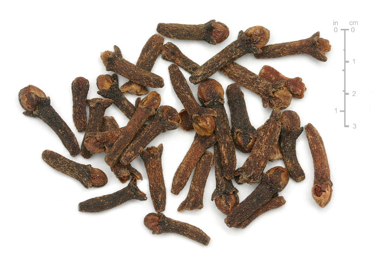 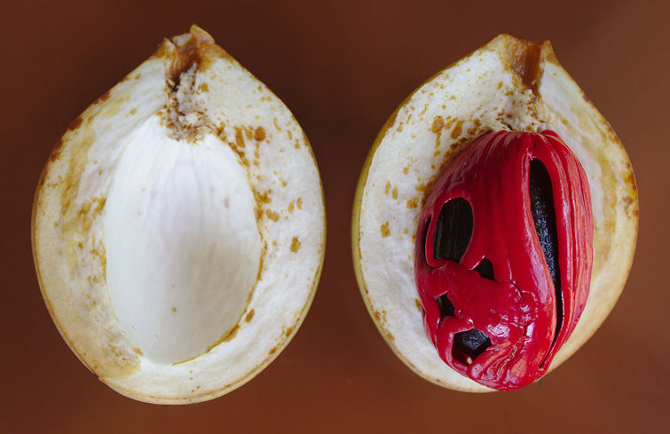
(대항해 시대를 낳은 대표적 향신료입니다. 위가 말린 정향, 즉 clove이고, 아래가 육두구, 즉 nutmeg입니다. 육두구의 붉은 씨앗 부분을 mace라고 하고, 그것이 바로 향료로 사용되는 부분이라네요. 저는 육두구는 맛보지 못했고 정향만 접할 기회가 있었는데, 정향만 해도 아주 근사하고 세련된 냄세가 나더군요.) 그런 생각을 하다보면, 유럽인들이 신대륙을 발견하고 식민지화하던 대항해 시대에 몬산토 같은 기업이 존재하지 않았다는 것은 정말 다행이라는 생각이 듭니다. 최소한 신대륙에서 건너온 옥수수나 감자, 카카오와 담배 같은 새로운 작물들은 아무런 라이센스 비용 없이 기존 세계에도 전파되었으니까요. 그러나 몬산토 같은 기업보다 더 나쁜 행태를 보여준 기업이 있었습니다. 바로 네덜란드의 동인도 회사였습니다. 이 난폭한 상인(또는 침략자)들은 향신료가 나는 인도네시아 몰루카 제도(Moluccas)에서 정향(clove)과 육두구(nutmeg) 등의 향신료 나무들을 독점했습니다. 그 묘목이나 생씨앗이 외부로 반출되지 않도록 엄격하게 통제했지요. 이는 향신료 장사를 좀더 영구적으로 하기 위해 그나마 생산적으로 행태를 바꾼 것이었습니다. 그 이전 시대에는 두번 다시 이 곳에 올 수 있을지 어떨지 확신이 없었던 서양 모험 항해가들은 다른 유럽 선박들이나 아랍 선박들이 향신료를 가져갈 수 없도록 향신료를 걷어들인 뒤 아예 해당 향신료 나무들을 불태워 버렸다는 이야기까지 있으니까요. 이런 행태들 때문에 유럽 시장에서 향신료 가격은 하늘을 찔렀고, 향신료는 부자나 귀족들이나 겨우 맛볼 수 있는 귀한 것으로 남았습니다.
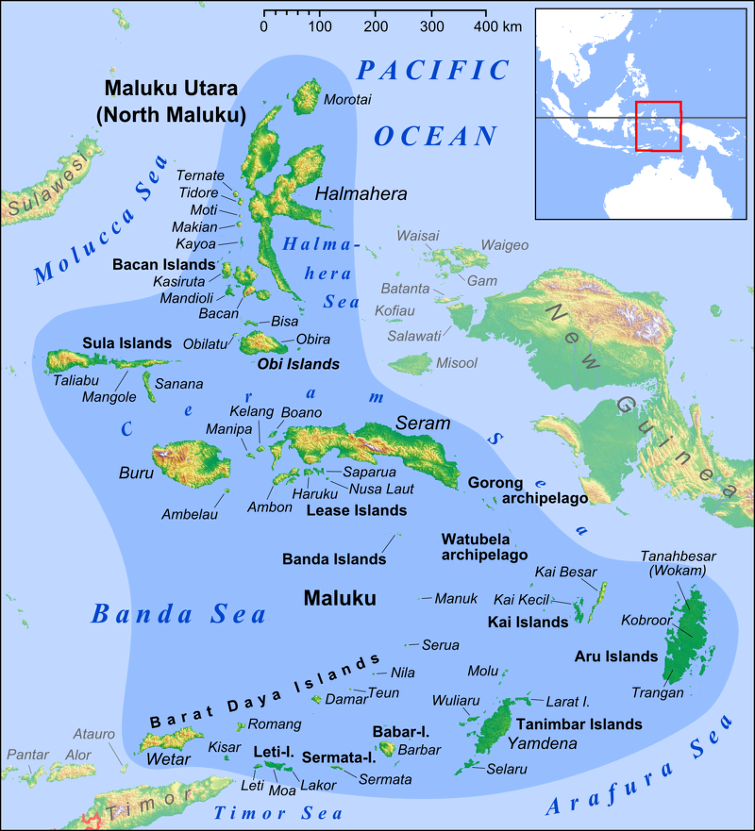
(몰루카 제도, 예전에 향료 제도로 알려진 바로 그 지역입니다.)
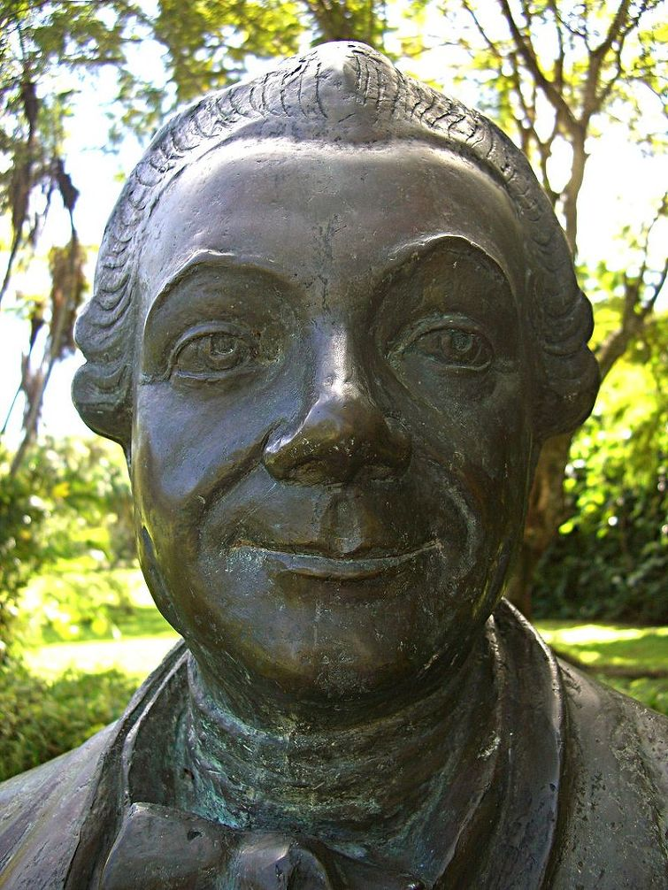
(프랑스의 문익점, 피에르 퐈브르 선생의 동상입니다.) 그러나 독점은 나쁜 것이고, 많은 이들이 독점을 깨기 위해 많은 사람들이 갖은 수를 다 씁니다. 대표적인 사례가 바로 18세기 중반 활약한 퐈브르(Pierre Poivre)라는 프랑스 식물 학자의 경우입니다. 이 양반은 원래 선교사로서, 베트남과 중국 남부 등에서 선교 활동을 했습니다. 이 분은 오른팔 팔꿈치 아래가 없었는데, 이는 젊은 시절 승객으로 프랑스 선박을 타고 인도로 가다 영국 군함과의 해전이 벌어지자, 용감히 나서서 영국 군함과의 포격전을 돕다 영국 포탄에 손목을 잃었기 때문이었습니다. 퐈브르는 또한 열정적인 아마추어 원예학자였습니다. (하긴 그 시절에 프로 원예학자라는 직업이 없었지요.) 그는 인도양에 있는 프랑스의 식민지인 모리셔스(Mauritius, 당시 이름은 Isle de France) 섬에 관리로 재직하면서 온갖 열대 식물들을 모아 식물원을 만들기도 했습니다. 이 식물원은 Pamplemousses Botanical Garden라는 이름으로 아직도 잘 운영되고 있습니다.
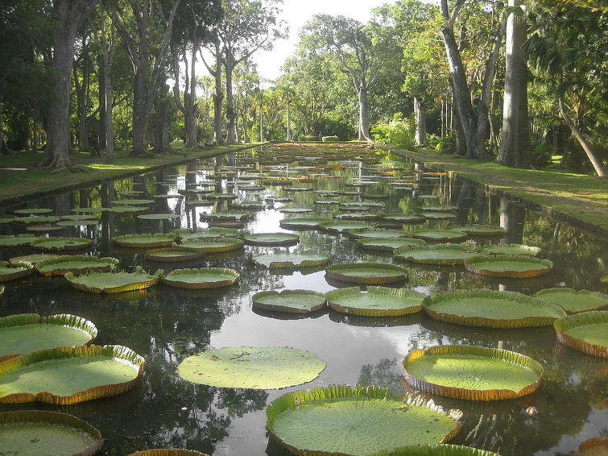
(퐈브르가 조성한 Pamplemousses 식물원입니다. 몇 만 평 되는 큰 규모라고 합니다.) 퐈브르는 네덜란드인들의 향신료에 대한 독점권을 깨기 위해 아주 정공법, 즉 도둑질을 택합니다. 그는 네덜란드인들의 감시가 소홀한 어느 외곽 지역의 섬에도 정향과 육두구 나무가 울창히 자란 곳이 있다는 말을 듣고 1769년 5월 향료 제도를 향해 출항하여 미아오(Miao)라는 작은 섬에서 정향과 육두구의 어린 묘목과 함께 1만여개의 육두구 열매를 채집해 오는데 성공합니다. 이렇게 듣고 보면 별 거 아닌 항해담 같습니다만, 이는 목숨을 건 모험이었습니다. 당시 네덜란드인들을 향료 제도에 대한 독점권을 지키기 위해 현지 토착인들은 물론 중국인 영국인 프랑스인 할 것 없이 향료 제도를 얼쩡거리는 인간들을 닥치는 대로 감금과 고문, 살해를 자행하는 완전 극악무도한 인간들이었거든요. 결국 퐈브르가 훔쳐온 이 씨앗들은 아프리카 동해안과 잔지바르로 옮겨져 재배되고 있습니다. 그러나 퐈브르가 가져온 귀한 향료 나무 묘목들은 결국 제대로 뿌리를 내리고 자라지는 못 했습니다. 선창에 보관해두자니 햇빛을 못 받은 묘목들이 금새 시들어 버렸고, 갑판에 두자니 거친 소금물이 튀어 역시 말라 죽었던 것입니다. 긴 항해에서 그런 묘목들에게 정성껏 물을 주는 것도 어려운 일이었고요. 씨앗 형태로도 옮겨 심는 것이 가능한 식물은 대양을 건너는 것이 어렵지 않았으나, 모든 식물들이 그렇게 되지는 않았습니다. 덕분에 고무는 포르투갈령 브라질에서만 나는 자원으로 남았고, 차는 중국에서만 나는 기호품으로서 영국의 은화를 중국으로 꾸준히 유출시키는 원인이 되었지요.
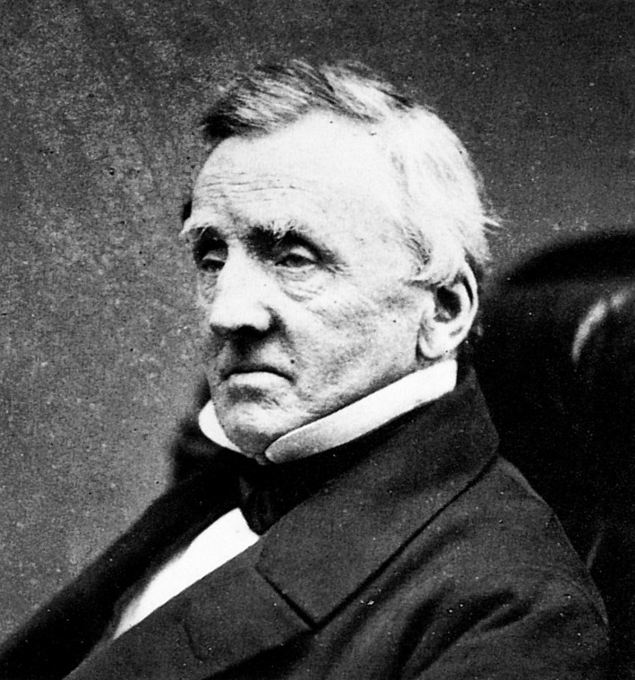
(런던의 개업의 나대니얼 워드입니다.) 그런 상황이 계속 되던 1830년대, 영국 런던에서 의사로 일하던 워드(Nathaniel Bagshaw Ward)라는 이름의 아마추어 식물학자가 있었습니다. 당시 런던의 대기는 석탄 연기에서 나온 아황산가스가 듬뿍 들어간 스모그로 인해 끔찍한 상태였고, 그런 대기 속에서 그가 키우려던 외국 식물 종자 중 제대로 자라는 것이 별로 없었습니다. 그는 당시 아마추어 식물학자들이 흔히 그러듯 곤충학에도 관심이 많아 어떤 나방의 번데기를 밀봉된 유리병 속에서 키우고 있었습니다. 그 번데기를 넣은 병 바닥에는 나뭇잎을 깔아 놓았는데, 비록 번데기는 나방으로 깨어나지 못했지만 그 나뭇잎 무더기에서 몇 종류의 잡초와 고사리류가 피어났습니다. 처음에는 그냥 대수롭지 않게 여기고 방치했는데, 보다 보니 그렇게 피어난 식물들이 그런 지독한 대기 속에서도 아무런 물도 주지 않고 방치했는데도 무려 4년간을 자라났습니다. 나뭇잎에 있던 수분이 그 유리병 안에서 순환되면서 수분을 공급했고, 밀봉된 병 속에서 이 식물들은 런던의 지독히 오염된 공기로부터 보호되었던 것이지요.
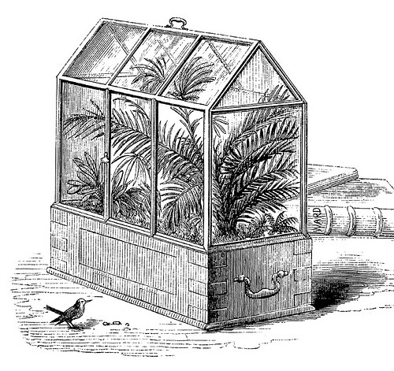 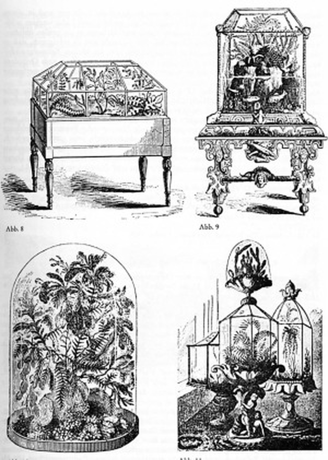
(여러가지 형태의 워드 상자입니다.) 워드는 이 관찰로부터 워드 상자(Wardian case)라는 것을 만들어냅니다. 이는 나무틀과 유리로 만든 간단한 휴대형 밀봉 온실 같은 것이었습니다. 이것은 처음에는 런던처럼 대기 오염이 심한 곳에서 실내 온실 같은 것으로 사용되었습니다만, 이 진가를 알아본 식물학자들이 곧 대륙간 묘목 이송에 사용하게 됩니다. 이 워드 상자를 이용하면 묘목 등을 갑판에 놔두어도 소금물이 튀지 않아 햇빛을 충분히 쬐어 줄 수 있었고 물도 따로 주지 않아도 되므로 2~3달 걸리는 대서양 및 태평양 횡단에서도 묘목을 살려서 올 수 있었던 것입니다. 19세기 중반 북극 탐험에 나섰다 실종된 뒤, 최근에야 그 잔해가 발견된 영국 해군의 극지 탐험선 에레버스(HMS Erebus) 호에도 이 워드 상자가 실렸었습니다. 에레버스 호는 북극 탐험에 나서기 전인 1840~1841년 남극 대륙 주변을 일주했는데, 이때 에러보스 호에는 뉴질랜드에서 영국으로 보내지는 뉴질랜드 토착 식물들의 묘목이 들어 있었습니다.
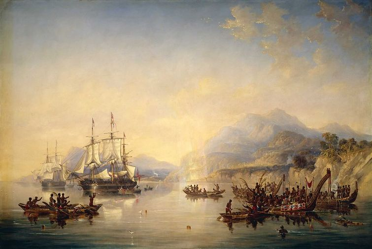
(뉴질랜드 연안의 에레버스 호와 테러 호입니다. 이 둘은 모두 불과 몇 년 뒤인 1845년 북극 탐험에 투입되었다 모두 실종되었습니다. 이들이 사람들에게 발견된 것은 최근의 일이니 무려 170년 뒤네요.) 이 상자 덕분에 영국이 얻은 경제적 이익은 대단한 것이었습니다. 이제 브라질에서 전량 수입해야 했던 고무도 지구 반대편에 있는 스리랑카와 말레이 등 영국령 식민지에서 대규모로 재배될 수 있었습니다. 무엇보다 중국에서 수입해야 했던 차도 이젠 인도 아쌈 지방에서 대량 재배되어, 영국의 국민 음료가 맥주와 진에서 홍차로 바뀔 수 있게 되었습니다. 고무 나무와 차 나무가 이 워드 상자에 실려 운송될 수 있었던 것입니다.
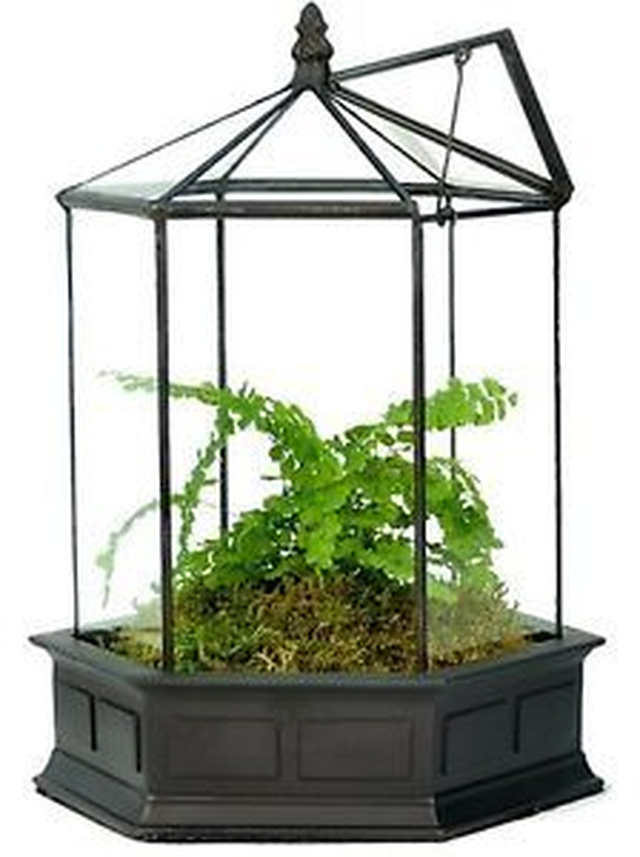
(물론 쌀 농사와 보리 농사를 짓던 농민들에게 차 나무나 고무 나무 농사를 짓도록 강요한 영국 식민 정책은 심각한 식량 조달 불균형을 낳아 많은 현지 농민들이 아사하는 비극을 낳기도 했답니다.) 원래 식물학이라고 하면 굉장히 따분하고 심지어 취직에도 아무 도움이 안 되는 대표적인 순수 학문이라고 인식됩니다. 최근 개봉된 영화 "더 마션"에서도 화성에 남겨진 식물학자 맷 데이먼을 위로한답시고 문자로 통신하던 동료 우주 비행사가 "Botany... not a real science" (식물학은 진짜 과학도 아니쟎아) 라고 놀리는 장면까지도 나오지요. 하지만 따지고 보면 식물학만큼 인류의 삶에 큰 도움이 되는 학문이 없습니다. 가령 농생물 기업인 몬산토는 말할 것도 없고, 이번에 몬산토를 통째로 매입한 바이엘 같은 제약 회사에게도 식물학은 매우 중요합니다. 와이프가 어느 책에서 읽고 해준 이야기인데, 그런 신약의 주성분은 주로 식물 쪽에서 나오는데 아마존 밀림 속에는 아직 인류가 연구해보지 않은 각종 식물과 이끼 등이 수천 수만 종이 있다고 합니다. 그런 미지의 식물 중에 무슨 기적의 신약이 나올지는 아무도 모르는 것이니, 아직도 식물학의 가능성은 무궁무진하다고 할 수 있지요.
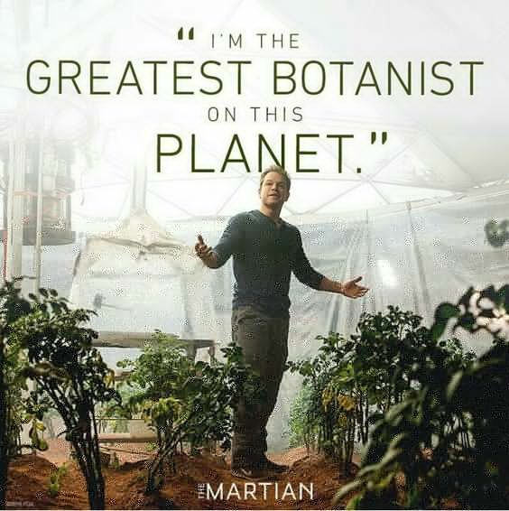
(식물학이 진짜 과학 축에는 못 끼는 학문일지는 모르겠으나, 만약 화성에 홀로 남겨진 맷 데이먼이 식물학이 아닌 전자 공학이나 성형외과 등을 전공했다면 아마 굶어 죽었을 것입니다.) 그렇다고 모든 것을 돈 돈 돈으로만 생각하시면 곤란합니다. 가령 워드 상자를 만든 닥터 워드는 이 상자의 발명으로부터 아무런 금전적 이익을 보지 못 했습니다. 그저 그의 이름이 역사에 길이 남았다는 점 정도지요. 그렇다고 워드가 가난 속에 쓸쓸히 죽었다는 이야기는 아닙니다. 뭐니뭐니 해도, 워드의 본업은 의사였거든요. 의사 생활을 계속 하다, 은퇴해서 공기 좋은 시골에 가서 잘 살다 갔다고 합니다.
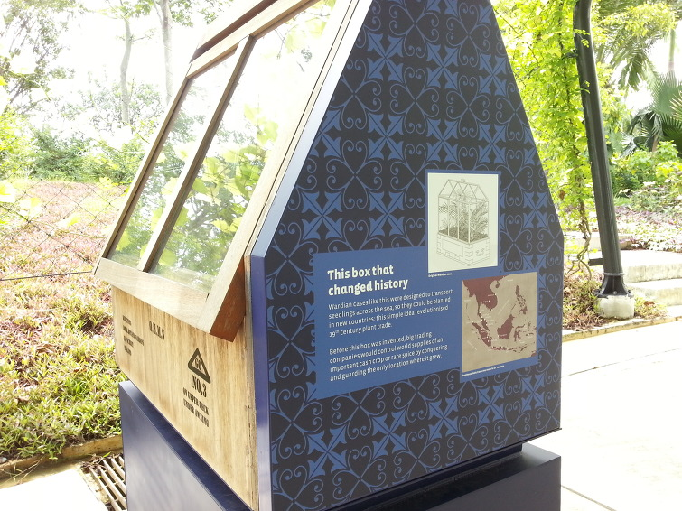
(이건 제가 직접 찍은 사진입니다. 제가 Wardian case라는 것에 대해 처음 알게 된 것이 이 싱가폴 식물원에서였습니다. 워드 상자 옆면에 "역사를 바꾼 상자"라고 되어 있네요.)
** 전에 썼던 글인데, 요즘처럼 Covid-19 바이러스가 유행하는 흉흉한 상황에서 재탕합니다. 이런 상황에서 '인류가 이미 생산해놓은 식량 재고만 먹는다면 몇 개월을 버틸 수 있을까'가 궁금했는데, 전에 썼던 글 중에 그런 내용이 있었는데 어디에 써놨더라... 하고 찾아보니 이 글 속에 들어있네요.